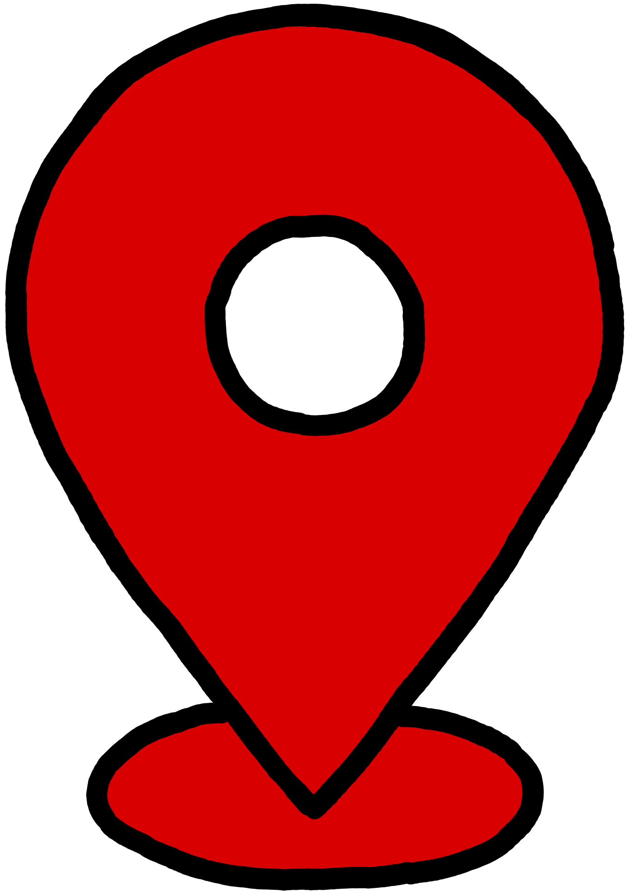
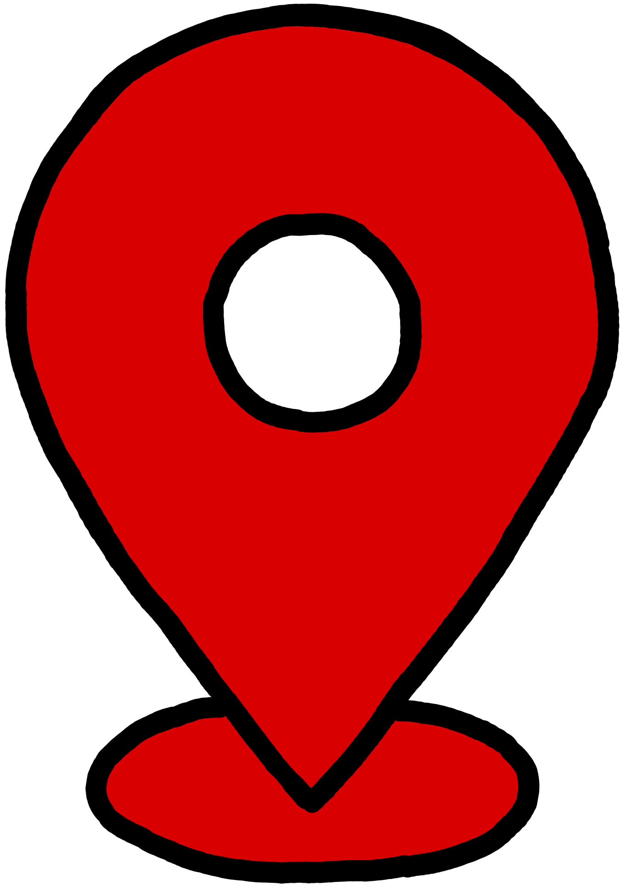

I have lived in England for four and a half years. I studied in Clifton College from year 3 to year 8. I was able to learn English in a completely English school. I was also able to discover the city and its culture and history.
One of my grandmothers was born Italian. Here entiere side of the family still lives in the same area where she grew up. To keep up our relationship with them we go there every year. It is always a pleasure to learn what they have been up to. I have started to learn Italian in the goal of having more productive conversation with them.
I was fortunate enough to spend two weeks of holidays in Quebec, Canada. Although it is a french and English speaking country, we (my family and I) were quite suprised about the difference in mental states and our approche to life.
I met an amazing friend back in England that I mentored at first to show here around school. She was german. She has gone back to since then, but my famiky and hers has become close friends and have visited each others country many times. Even though we have never lived there, I can say that I do have a certain understanding of the country although it may be incomplete.